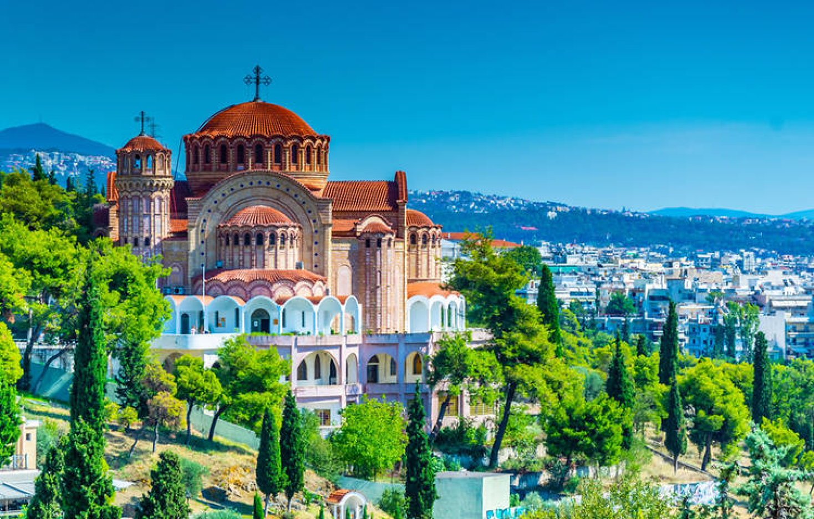
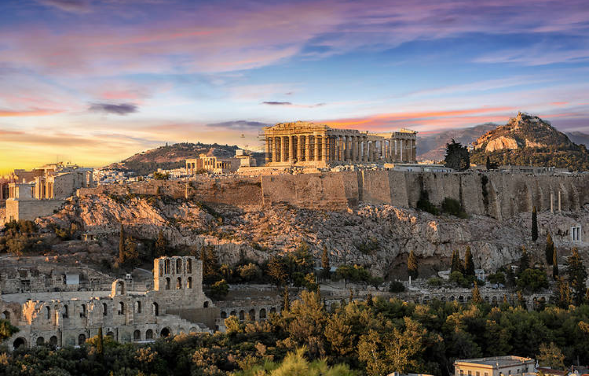
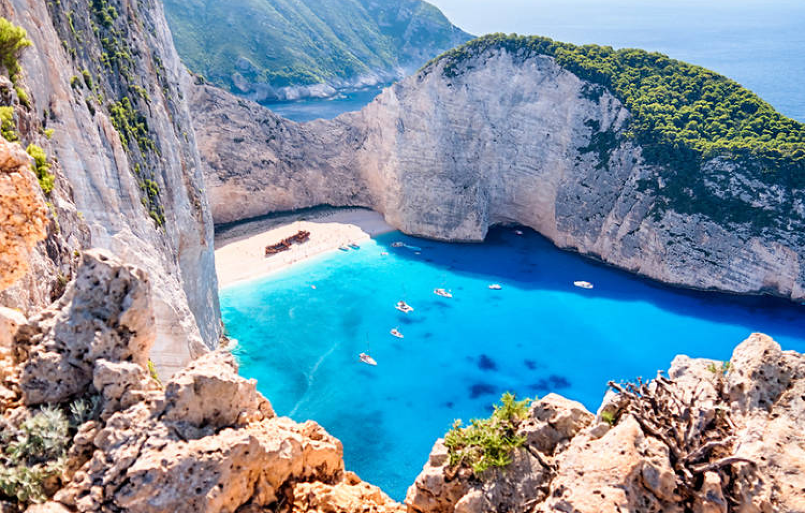
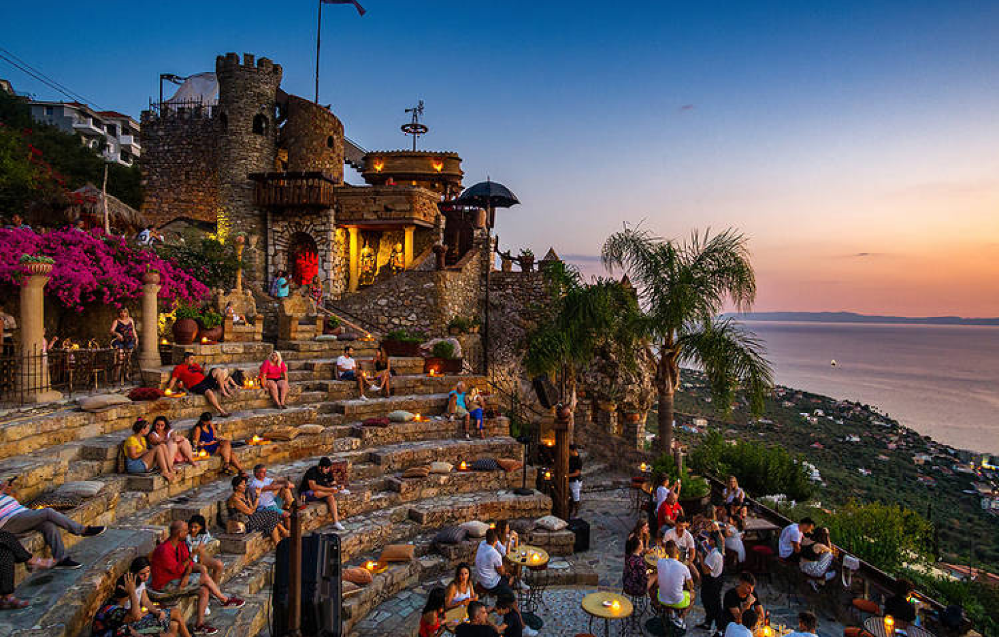

Greece
Away from all the people, Greece is blessed with more than 6,000 islands and almost as much diversity when it comes to landscape, all sprawling hills and forests bleeding into stunningly clear waters. In Greece, you can dip your toes into the sea, or you can dip your toes into the long and storied history of Western culture. The choice is yours. These are the best places to visit in Greece right now.
Santorini
The scenery in Santorini, one of the Cyclades islands in the Aegean Sea, seems crafted by the Greek gods: whitewashed villages crown the island with views over its majestic coastlines, rural vineyards span huge stretches inland and the beaches are black, red and out of this world. There’s a ridiculous amount for explorers, foodies and culture vultures to discover, from archaeological sites to swimming spots and, of course, brilliant wine and food. And trust us: this place is even more beautiful IRL than it looks on the gram

Thessaloniki
Once the second city of the Byzantine Empire – and later a thriving Ottoman port city connecting east and west – Thessaloniki has only been part of Greece since 1912. And that really shows. This place doesn’t feel like Greece you see in tourist brochures: its central market, Kapani, has all the colour and chaos of an Istanbul bazaar, and much Ottoman architecture remains throughout the city centre – you can even visit the house where Mustafa Kemal Atatürk, the father of modern Turkey, was born
Athens
In higgledy-piggledy Athens – where ancient and modern, nature and civilisation, tradition and trends mingle – there really are surprises hidden around every corner. Traffic-filled roads mask cobbled alleys with bougainvillaea-drenched cafés and restaurants. Inside neoclassical buildings, cutting-edge galleries are thriving. The plainest of entranceways can lead to an outdoor cinema serving ouzo under the starry night sky. And then you turn one way, and chances are the twinkling Parthenon’s staring right back at you. Athens is the cosmopolitan heart of Greece and indeed all of Western culture – you must go at least once in your life.
Corfu
Italianate villages, ornate palaces and romantic beaches are on the cards if you visit the lush island where the Durrell family once lived. With its sundry influences left by past invaders, Corfu is a place where you can drink ginger ale with your Greek salad, stroll streets packed with Byzantine and Venetian architecture and meet modern-day monks in Paleokastritsa’s spectacular medieval monastery. And after a hard day’s sightseeing and stuffing your face, you’ll obviously want to jump straight in the Ionian Sea – never not a stunning shade of turquoise-blue.

Zakynthos
Better known as Zante, Zakynthos draws a party-ready crowd to its notorious Laganas nightlife strip, but this sunstruck Ionian isle – known by the Venetians as ‘the flower of the East’ – is also blessed with some of the Med’s most beautiful scenery. This includes the spectacular Shipwreck Beach, whose bright-blue waters hemmed in by sheer white cliffs can only be reached by boat, and Zakynthos Marine Park, home to slippery seals and savvy turtles. It’s truly wild – in multiple senses of the word.
Kalamata
The city of Kalamata in the Peloponnese is home to the ancient ruins of Messenia, the picturesque Navarino Lagoon beach, and also those very famous olives you may recognise the name from. Few tourists venture to these parts, which is great news for you. To explore the wider region, base yourself at the Ant Farm – a beautiful farmhouse just outside the city, where you can stay in one of ten treehouses nestled within the olive trees.
